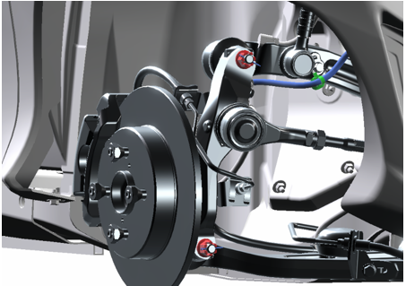
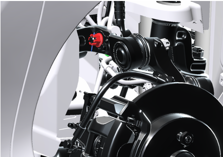
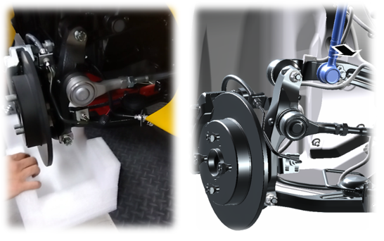
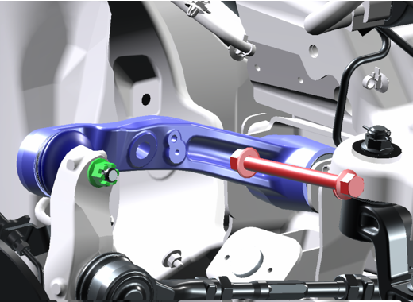
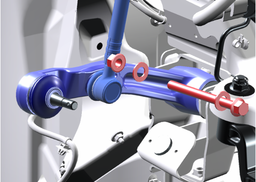

7-1-3 アッパーアーム
準備品
|
油脂・その他 |
軸力安定剤 |
構成図
|
1 |
ARM ASSY, SUSPENSION UPR, RH (D8610-B1000) |
2 |
NUT, CASTLE W/FLANGE (D9321-81200-A) |
|
3 |
BOLT FLANGE, UPR ARM (D8619-12D01) |
4 |
NUT, CASTLE W/FLANGE (D9321-81200-A) |
|
5 |
NUT, FLANGE (Z5122-10000) |
6 |
WASHER, UPR ARM (D9451-14260) |
|
7 |
NUT, CASTLE W/FLANGE (D9321-81200-A) |
8 |
PIN, COTTER (D9551-18250-B) |
取り外し前作業
-
車両をジャッキアップし、フロントホイールを取り外す。
取り外し手順

1.アッパーアームRH取り外し
-
ハーネスクランプを切り離す。
-
コッターピンを取り外し、ロアアーム取付ナットを緩める。

-
コッターピンを取り外す。
-
ROD_ASSY_SUSPENSION_CONTROL取付ナットを取り外す。

-
フロントアクスルの下に緩衝材を用意する。
-
ROD_ASSY_SUSPENSION_CONTROLを切り離す。

-
ボルトナット、およびワッシャーを取り外す。
-
キャッスルナットを取り外し、アッパーアームを取り外す。
取り付け手順

1.アッパーアーム取り付け
-
ボルトに軸力安定剤塗布を塗布する。
-
ボルト、ナットでアッパーアームを取り付ける。
-
ROD_ASSY_SUSPENSION_CONTROLを取り付け、キャッスルナットを仮締する。
2.フロントアクスルASSY取り付け
-
フロントアクスルASSYをアッパーアーム、ロアアームに取り付ける。
-
アッパーアーム取付用ナットを締め付ける。
-
ロアアーム取付用ナットを締め付ける。
-
ナットを規定トルクで締め付け後、コッターピンを取り付ける。
-
キャッスルナットを本締めする。
-
ナットを規定トルクで締め付け後、コッタピンを取り付ける。
3.フロントホイールを取り付ける。